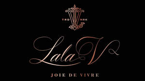

Trade Mark Journal No.2025/044 31 October 2025
UK00004266065 18 September 2025 (3,9,18,25,33,35)

- Class 3
- Cosmetics; Skincare cosmetics; Moisturisers [cosmetics]; Cosmetics and cosmetic preparations; Hair cosmetics; Skin fresheners [cosmetics]; Cosmetics for suntanning; Cosmetics for eye-lashes; Anti-aging moisturizers used as cosmetics; Organic cosmetics; Lip cosmetics; Nail cosmetics; Non-medicated cosmetics; Skin moisturizers used as cosmetics; Mousses [cosmetics]; Natural cosmetics; Cosmetics preparations; Make-up palettes containing cosmetics; Tanning gels [cosmetics]; Cosmetics in the form of lotions; Tanning oils [cosmetics]; Facial creams [cosmetics]; Colour cosmetics; Beauty care cosmetics; Self-tanning preparations [cosmetics]; Cosmetics for animals; Suncare lotions [for cosmetic use]; Eyebrow cosmetics; Tanning preparations [cosmetics]; Decorative cosmetics; Multifunctional cosmetics; Milks [cosmetics]; Eye cosmetics; Body creams [cosmetics]; After-sun oils [cosmetics]; Skin masks [cosmetics]; Tanning milks [cosmetics]; Cosmetics for eye-brows; Functional cosmetics; Facial gels [cosmetics]; Suntan oils [cosmetics]; Skin care cosmetics; Fluid creams [cosmetics]; Suntan lotion [cosmetics]; Cosmetics for children; Non-medicated cosmetics and toiletry preparations; Humectant preparations [cosmetics]; Emollient preparations [cosmetics]; Cosmetics in the form of creams; Powder compacts [cosmetics]; Sun-tanning preparations [cosmetics]; Cosmetic hair lotions; Colour cosmetics for the skin; After-sun milks [cosmetics]; Suntanning oil [cosmetics]; After-sun milk [cosmetics]; Cosmetics for use on the skin; Cosmetic moisturisers; Bath powder [cosmetics]; Sunscreens [for cosmetic use]; Cosmetic creams and lotions; Skin recovery creams [cosmetics]; Night creams [cosmetics]; Body gels [cosmetics]; Cosmetics for the use on the hair; Cosmetic products in the form of aerosols for skincare; Sun blocking lipsticks [cosmetics]; Body and facial creams [cosmetics]; Sunscreen [for cosmetic use]; Lip stains [cosmetics]; Body care cosmetics; Creams (Cosmetic -); Cosmetic creams; Sunscreen creams [for cosmetic use]; Cosmetic soaps; Cosmetics containing keratin; Cosmetics in the form of powders; Hair care lotions [for cosmetic use]; Cosmetic skin fresheners; Dyes (Cosmetic -); Cosmetic dyes; Cosmetics in the form of oils; After-sun lotions [for cosmetic use]; Cosmetics containing panthenol; Beauty lotions; Cosmetic facial lotions; Facial lotions [cosmetic]; Nail paint [cosmetics]; Cosmetic suntan lotions; Nail hardeners [cosmetics]; Colour cosmetics for children; Skin care lotions [cosmetic]; Perfume oils for the manufacture of cosmetic preparations; Tissues impregnated with cosmetics; Nail tips [cosmetics]; Anti-aging creams [for cosmetic use]; Sun protecting creams [cosmetics]; Cosmetic products for the shower; Anti-ageing creams [for cosmetic use]; Smoothing emulsions [cosmetics]; Nail primer [cosmetics]; Skin cleansers [cosmetic]; Perfumed powders [for cosmetic use]; Liners [cosmetics] for the eyes; Moisturising skin lotions [cosmetic]; Cosmetic creams for the skin; Skin creams [for cosmetic use]; Skin creams [cosmetic]; Body and facial gels [cosmetics].
- Class 9
- Fashion sunglasses; Fashion spectacles; Fashion eyeglasses.
- Class 18
- Fashion handbags; Bags for sports clothing; Holdalls for sports clothing.
- Class 25
- Fashion hats; Menswear; Ready-to-wear clothing; Knitwear [clothing]; Face masks [fashion wear] ; Casual clothing; Foulards [clothing articles]; Clothing; Casual footwear; Dance clothing; Sportswear; Clothing for sports; Sports clothing; Playsuits [clothing]; Bandeaux [clothing]; Parts of clothing, footwear and headgear; Footwear; Leather clothing; Clothing of leather; Leather (Clothing of -); Leisure clothing; Denims [clothing]; Articles of sports clothing; Japanese traditional clothing; Knitwear; Smart clothing; Clothing for leisure wear; Corsets [clothing, foundation garments]; Clothing for martial arts; Articles of clothing; Footwear for women; Japanese style sandals of leather; Headbands [clothing]; Headbands for clothing; Cashmere clothing; Athletic clothing; Sports garments; Footwear for sports; Sports footwear; Kendo outfits; Jackets being sports clothing; Men's clothing; Clothing of imitations of leather; Leather (Clothing of imitations of -); Furs [clothing]; Clothing for wear in wrestling games; Clothes for sports; Japanese style clogs and sandals; Leisure footwear; Footwear for sport; Footwear for use in sport; Party hats [clothing]; Skating outfits; Clothing for gymnastics; Clothing for cycling; Footwear for snowboarding; Articles of clothing made of leather; Corsets [foundation clothing]; Clothes for sport; Corsets being foundation clothing.
- Class 33
- Wine; Grape wine; Sparkling grape wine; Sparkling wine; Fruit wine; Mulled wine; Red wine; Rice wine; Cooking wine; Strawberry wine; Blackberry wine; Sparkling fruit wine; Wines; White wine; Sweet wine; Aperitif wines; Wine coolers [drinks]; Mulled wines; Sparkling wines; Beverages containing wine [spritzers]; Wine punch; Dessert wines; Low-alcoholic wine; Alcoholic wines; Still wine; Prepared wine cocktails; Red wines; Sparkling red wines; White wines; Table wines; Yellow rice wine; Sparkling white wines; Fortified wines; Rose wines; Sweet wines; Wine-based drinks; Black raspberry wine (Bokbunjaju); Wine-based aperitifs; Natural sparkling wines; Wine-based beverages; Naturally sparkling wines; Acanthopanax wine (Ogapiju); Whiskey [whisky]; Korean traditional rice wine (makgeoli); Cooking brandy; Whisky; Alcoholic fruit cocktail drinks; Brandy; Aperitifs with a distilled alcoholic liquor base.
- Class 35
- Marketing research in the fields of cosmetics, perfumery and beauty products; Retail services in relation to fashion accessories; Fashion show exhibitions for commercial purposes; Promoting the sale of fashion goods through promotional articles in magazines; Fashion shows for promotional purposes (Organization of -); Organization of fashion shows for promotional purposes; Organisation of fashion shows for commercial purposes; Organization of fashion parades for sales promotion purposes; Retail services connected with the sale of clothing and clothing accessories.
LALA V LIMITED